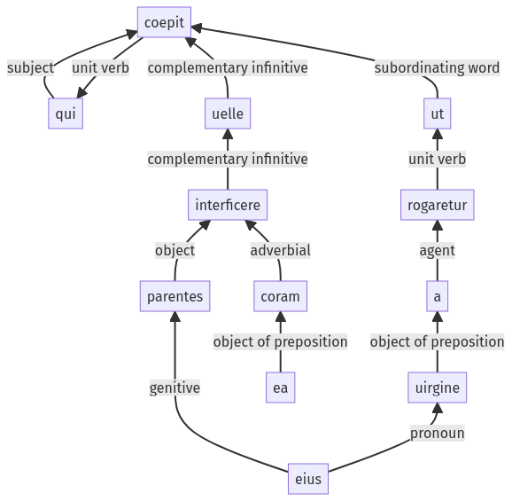

Hyginus, Fabuleer, 35pr.1.14-35pr.1.25a
35pr.1.1-35pr.1.13a | 35pr.1.26-35pr.1.35a
Sentence 473
35pr.1.14-35pr.1.25a
qui ut a uirgine rogaretur, parentes eius coram ea interficere uelle coepit.
1 qui
2 ut a uirgine rogaretur
1 parentes eius coram ea interficere uelle coepit
qui ut a uirgine rogaretur, parentes eius coram ea interficere uelle coepit.
Highlighting:
- connecting words
- unit verb
- subject
- object
Color code:
- independent clause (level 1, intransitive verb)
- subordinate clause (level 2, transitive verb)
